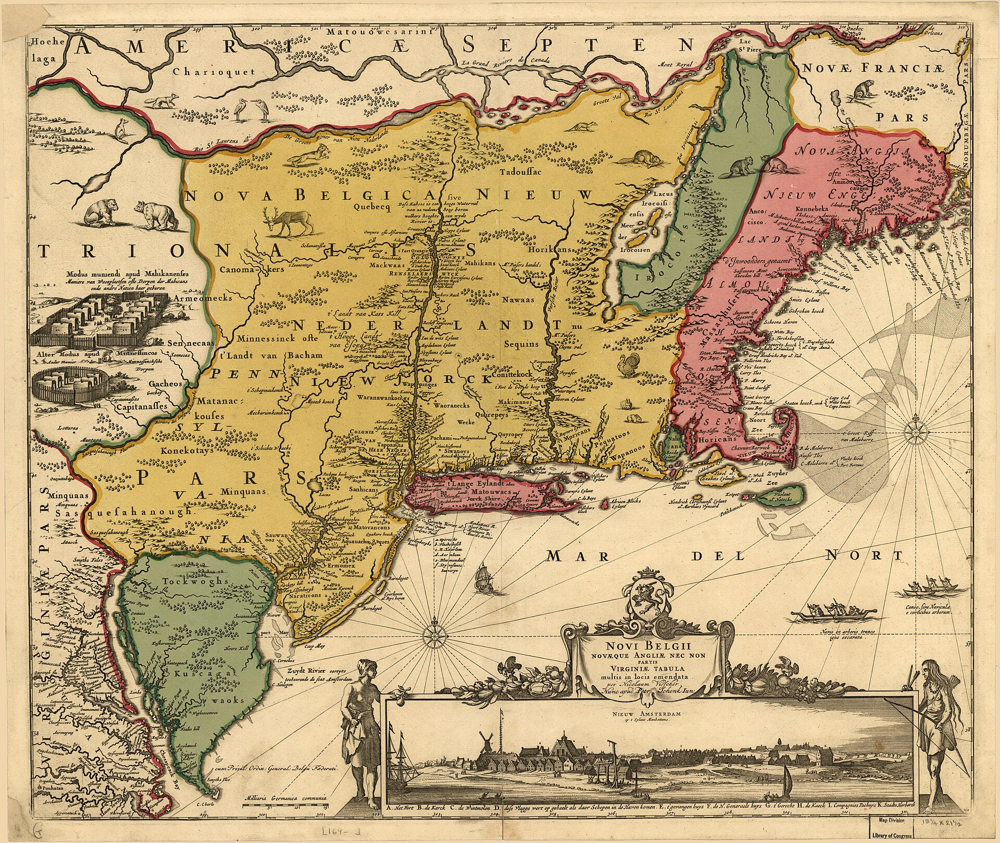

Directions: Fill in the chart as we study each part of the lesson. Keep this page in your notebook. You will use it again on the review day before the unit test, and it is the record the writing task argues from.

| Part | What happened | What it gave | What it cost or limited |
|---|---|---|---|
| New York | |||
| Penn's Pennsylvania | |||
| The Lenape sales | |||
| Maryland, 1649 | |||
| Flushing, 1657 | |||
| The Navigation Acts |
Two systems in one paragraph. Read down your chart. Explain in your own words how the middle colonies could be at once the freest colonies for worship and conscience and the most tightly routed colonies for trade. Use at least three rows of the chart, and include one date for each system.
| Part | What happened | What it gave | What it cost or limited |
|---|---|---|---|
| New York | New Netherland, a Dutch fur trade colony on the Hudson, surrendered to an English fleet in 1664 and became a proprietary colony. | Dutch farms, churches, and language survived the change of rulers. | Enslaved Africans remained enslaved, and the Dutch lost their colony. |
| Penn's Pennsylvania | Penn's charter came in 1681; he advertised in English, Dutch, and German, drew Quakers, Germans, Welsh, and Scots-Irish settlers, and laid out Philadelphia in 1682. | Land, an elected assembly, and liberty of worship; by 1750 Philadelphia was the largest city in British America. | Growth rested on continued land purchases from the Lenape, and on his heirs' honesty. |
| The Lenape sales | Lenape leaders sold land in council, as at Shackamaxon in 1682, for trade goods and a counterweight to rivals. | Goods, an alliance, and a buyer bound by his own rule to pay in council. | Each sale shrank the homeland. In 1737 the Walking Purchase took land no council had sold, and families were pushed west. |
| Maryland, 1649 | The assembly protected worship for persons professing belief in Jesus Christ and punished denial of the Trinity with death, in the same act. | Peace between a Catholic founding minority and a Protestant majority. | No protection at all for anyone outside Trinitarian Christianity, and fines for religious insults. |
| Flushing, 1657 | Edward Hart and thirty residents petitioned Stuyvesant to receive Quakers, on grounds of conscience, the law of love, peace and liberty, and their charter. | A claim of conscience from below that outlasted its punishment; the company directors overruled Stuyvesant in 1663. | Hart's arrest and punishment of signers, and six years before the overruling came. |
| The Navigation Acts | The acts of 1651 and 1660 required English or colonial ships and sent enumerated goods only to England or other English colonies, under forfeiture. | A carrying trade for colonial shipowners, a protected market, and a legal grain trade to the Caribbean. | Foreign buyers closed to enumerated planters, duties and routing through England, and smuggling as the standing temptation. |
Two systems in one paragraph. Strong answers name both systems and their opposite directions. Conscience ran upward: a Quaker proprietor advertised worship liberty across Europe, Maryland's assembly protected Christian worship in 1649 while punishing denial of the Trinity, and Flushing's townspeople claimed liberty of conscience against their governor in 1657. Trade ran downward from London: the Navigation Acts of 1651 and 1660 fixed the ships colonists could use and the ports their best goods could reach, and colonists answered inside the rules, with colonial hulls, unenumerated grain, and smuggling. Full credit requires both halves held together, because the records show each condition in a different part of life.